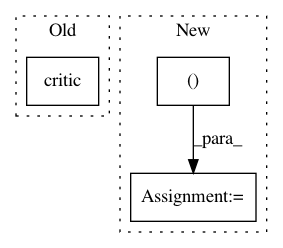

066fda55de8b2a65d57b6201d5b37daa6f7f399d,catalyst/rl/utils.py,PolicyHandler,_get_q_values,#PolicyHandler#Any#Any#Any#,416
Before Change
def _get_q_values(self, critic: CriticSpec, state: np.ndarray, device):
states = torch.Tensor(state).to(device).unsqueeze(0)
if self.value_distribution == "categorical":
probs = torch.softmax(critic(states)[0], dim=-1)
q_values = torch.sum(probs * self.z, dim=-1)
elif self.value_distribution == "quantile":
q_values = torch.mean(critic(states)[0], dim=-1)
After Change
elif self.value_distribution == "quantile":
q_values = torch.mean(output[0, -1, :, :], dim=-1)
else:
q_values = output[0, -1, :]
return q_values.cpu().numpy()
@torch.no_grad()
def _sample_from_actor(
In pattern: SUPERPATTERN
Frequency: 3
Non-data size: 3
Instances
Project Name: catalyst-team/catalyst
Commit Name: 066fda55de8b2a65d57b6201d5b37daa6f7f399d
Time: 2019-06-10
Author: khrulkov.v@gmail.com
File Name: catalyst/rl/utils.py
Class Name: PolicyHandler
Method Name: _get_q_values
Project Name: facebookresearch/Horizon
Commit Name: 8dcbf002d0058939802920c11f74791708838791
Time: 2018-04-06
Author: edoardoc@fb.com
File Name: ml/rl/training/ddpg_predictor.py
Class Name: DDPGPredictor
Method Name: predict_q_value